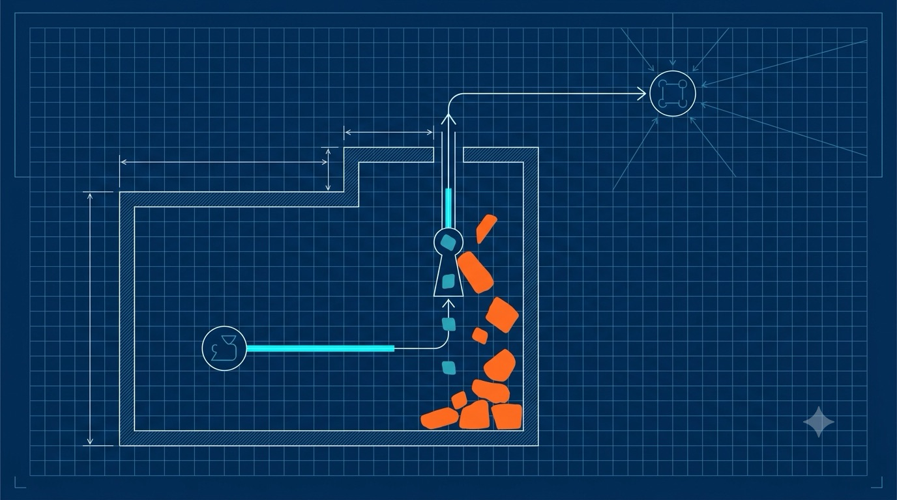

Chapter 10
The Control Protocol: Talking to the Fleet
Everything so far has been about one process capturing one failure. But you don't run one process — you run a fleet, and a fleet has a problem a single agent can't solve alone. This chapter is about the second protocol in LinkLog, the one you never implement but should absolutely understand: the Control Protocol (LCP). It's a persistent connection from inside your network to a vendor's server — so its safety shape is worth your full attention, and it turns out to be the most carefully constrained thing in the whole system.

A cyan-on-navy blueprint-style editorial illustration: inside a walled customer boundary, a single agent opens one thin outbound arrow up to a distant "control plane" node — no arrow ever points back in. Between them sits a narrow keyhole/valve labelled by shape only, letting only small "verdict" tokens pass downward while blocking larger "command" shapes. Thin technical schematic linework, drafting grid, one bright cyan accent on the outbound line, orange on the blocked commands. No readable text baked in. ~1280×720px, 16:9, centred with safe margins.
Generate this with your image agent, then drop the file here.
Two protocols, opposite jobs
You already met one protocol without me naming it. When your process commits a .llog artifact and the sidecar reads it (Chapter 9), that's the Logic Graph Protocol (LGP) — SDK to agent, one forensic artifact per failure, on a hot path with a sub-millisecond budget. LCP is its opposite in almost every dimension: agent to control plane, a handful of coordination messages per minute, never anywhere near your application. They version independently and share nothing but a company.
| LGP · Chapter 9 | LCP · this chapter | |
|---|---|---|
| Between | SDK → Agent | Agent ↔ Control Plane |
| Carries | Forensic execution graphs | Coordination only |
| Volume | One artifact per failure | A few messages / minute / agent |
| Budget | <1ms on the app hot path | Not on any hot path |
| Direction | One way | Bidirectional |
Per-agent containment does not compose. Picture a real outage: ten thousand of your agents each correctly dedupe the same failure locally (Chapter 7) — and still each open one pull request for the one bug. Ten thousand PRs. Local caps can't see each other, so a fleet-wide cap needs a single coordination point. That point, and only that point, is what justifies a standing connection to the vendor.
The load-bearing rule: the envelope
A persistent outbound connection from inside your network to a vendor-controlled server is, by default, a dangerous shape. The thing that makes it safe is one rule the entire protocol is built to preserve:
The agent's capability envelope is declared locally and enforced locally. The control plane may only request within it — it can never grant a capability your local configuration didn't already allow. It can only ever make the agent do less, never more.
This is the difference between a capability system and a command-and-control channel, and it's enforced by the party with something to lose: your agent. The very first message on connect, HELLO, is the agent announcing what it is and what it will refuse:
HELLO — the agent tells the platform what it may NOT ask{
"type": "HELLO",
"payload": {
"role": "production",
"envelope": {
"accepts_policy_tighten": true,
"accepts_stand_down": true,
"accepts_action_budget": true,
"accepts_correlation": true,
"executes_plugins": false, # statement of fact, not a preference
"serves_context_requests": false
}
}
}The envelope is not a negotiation — the platform cannot expand it. And role is a closed set: production or ci, nothing in between. A production agent always reports executes_plugins: false; one that claims otherwise is malformed, and the platform must reject the session. Staging and every other flavor declare production, because the restrictive envelope is the safe default and an in-between role is just a hole waiting for a rationale.
Conclusions and constraints, never commands
Here's the rule that makes the whole thing auditable. Every server-to-agent message carries a verdict or a limit — never an instruction and never a data request. The distinction is not stylistic; it's structural:
The enforcement is beautifully blunt: no LCP message may name a filesystem path, a query, or an executable. Messages reference fingerprints, artifact IDs, and lease IDs — nothing else. The rule of thumb the spec keeps repeating is the one to memorize:
If a message can name a file, it is the wrong message. An agent that receives one refuses it, reports an ENVELOPE_VIOLATION, writes it to your local audit log, and keeps running. A platform asking for a forbidden capability is a security event for you — and you can see it without the vendor's cooperation.
What the channel actually does: contain storms
Strip away the safety scaffolding and LCP has exactly one job worth a standing connection: stop a correlated storm from becoming ten thousand outward actions. It does this with two mechanisms — one for correctness, one for optimization — and you need both.
Correctness: ask before you act, and get a lease
Before any expensive or outward-facing action — an AI diagnosis, a PR, a ticket — the agent asks. A broadcast budget can't do this job: tell 10,000 agents "1 remaining" and you get 10,000 actions. So a grant is a lease, issued to exactly one agent:
already_claimed and simply don't act.The lease has three properties worth remembering, because they're all consequences of "safe to lose":
- Expiry is the only backstop. The server picks
expires_atgenerously above the action's worst case. A granted agent that dies is handled by the lease simply expiring — there is no liveness protocol on this channel. - No renewal. An action that outlives a generous lease is an action that should fail.
- Leases survive disconnects. A lease is time-scoped, not session-scoped — the agent holds
lease_idandexpires_atlocally, so a network blip mid-action doesn't strand the fleet's one permitted action.
The four ACTION_DENY reasons are a closed set, and one of them is the fail-open rule in miniature:
| Reason | Agent behavior |
|---|---|
already_claimed | Do not act — another agent (or an earlier lease of this one) holds it. |
budget_exhausted | Do not act — the fleet budget for this window is spent. |
stand_down_active | Do not act — equivalent to holding a stand-down for this fingerprint. |
unknown_action | Act per local caps. The channel doesn't govern this action, so it gets no veto — suppression by ignorance is forbidden. |
Optimization: STAND_DOWN, with a lock you hold
Once a fingerprint is claimed, it's wasteful to keep fielding 9,999 requests for it. So the platform proactively silences the fleet with a STAND_DOWN. This is the optimization layered on top of the correctness mechanism — lose it, and you degrade to ask-and-be-denied. More round-trips, zero wrong behavior.
But a "be quiet" message from a vendor is exactly the kind of power the envelope exists to bound. So the agent clamps it:
STAND_DOWN — and the local clamp the platform can't see or exceed# the message:
{ "type": "STAND_DOWN",
"payload": { "fingerprint": "a83f92bc",
"until": 1752541200000, "reason": "incident_open",
"incident_id": "INC-42" } }
# the agent's enforcement (from the reference client):
max := now + max_stand_down_s * 1000 # default 3600s, local config
clamped := until > max
until = min(until, max) # the platform cannot exceed your ceilingThe default ceiling is 3600s — one hour, locally configurable, and the platform can't see, set, or exceed it. One hour silences a storm wave; a hostile or buggy platform can silence your fleet for at most an hour per message. And because re-issuing before expiry is explicitly allowed (it's how a long incident is meant to work), sustained suppression becomes a repeating, audited act — every re-issue lands in the log you own — never a one-shot silent state. Hold that thought; it's the seam of the entire threat model.
The policy floor: more redaction, never less
There's one thing the platform can push that sounds dangerous: sanitization rules. A channel that can push redaction rules could push worse ones — quietly turning "raw data never leaves your host" into "…unless the vendor says otherwise." The resolution is an asymmetry: more redaction is safe; less is a trust inversion. So the rule set has two layers, and they combine by union:
Before applying any POLICY_TIGHTEN, the agent enforces five checks and rejects the update if any fails — reporting which one via POLICY_ACK:
- Local rules untouched. No pushed rule may reuse a local rule's
id— a push that names a local id is a refusal. - No capture config. The update can't touch capture, sampling, or allowlist mode. "Capture more" is a loosening and is out of scope entirely.
- Signed. Ed25519 over the decoded blob bytes — verified before parsing — against a key you pinned at deploy.
- Monotonic. The signed inner
versionmust exceed the stored one; replays are rejected. - Audit-logged. Every update, applied or rejected, is written to a log you own.
The verifying public key is local configuration, full stop — placed by your deploy, rotated by a redeploy. LCP can never carry a key, because a channel that could rotate its own trust root would be granting itself capability — the exact inversion the envelope exists to prevent. Under these rules, policy push flips from a risk into a feature: a new secret format appears in the wild, the pattern is pushed, and your whole fleet hardens in seconds instead of a redeploy cycle.
The messages that will never exist
Most protocols list what they support. LCP also, unusually, names what it permanently forbids — so the boundary is auditable and nobody can re-propose one of these as a reasonable-sounding feature later. All are rejected on sight; the reference client won't even parse them:
| Forbidden type | Why |
|---|---|
EXECUTE_PLUGIN | Remote code execution beside production — a command-and-control shape. Validation belongs in your CI. |
FETCH_CONTEXT | A data-exfiltration primitive. Reading host env/config/logs on demand is exactly what this product sells against. |
CAPTURE_MORE | Remotely loosening capture inverts the trust boundary. |
POLICY_REPLACE | Would permit removing redaction. Only POLICY_TIGHTEN exists. |
| any path / query | A message that can name a file is the wrong message. |
If the control plane went fully hostile
Put the pieces together and you can answer the question that actually matters: assume the vendor's control plane is completely compromised — what can it do to you?
| Attempt | Outcome |
|---|---|
| Execute code on your agents | Rejected — type forbidden, not implemented agent-side |
| Exfiltrate host data | Rejected — type forbidden |
| Weaken sanitization | Rejected — floor rule + signature |
| Rotate the policy trust root | Impossible — keys never travel this channel |
| Broaden capture | Rejected — out of protocol scope |
| Suppress all reporting | Possible — but bounded & audited |
One row is not "rejected," and the spec is honest about it. The residual risk is suppression: a hostile platform can issue blanket stand-downs and silence your fleet's outward actions. This is accepted and bounded — the max_stand_down_s clamp means sustained silence requires continuous, audit-logged re-issuing, and it can only withhold actions, never leak data. Silencing is strictly less severe than execution or exfiltration, and it degrades toward the offline behavior you already trust.
What this means for you
You will never write an LCP message. But four of its properties are yours to rely on, and one knob is yours to turn:
It's default-off. The open-source agent ships the LCP client disabled — it does nothing until you turn it on. It's safe to lose. With the channel down the agent still captures, sanitizes, fingerprints, diagnoses, and dispatches; it fails open to the local caps from Chapter 7, which are your always-on floor. Air-gapped is a first-class deployment, not a degraded one. You own the audit log — every grant, denial, stand-down (with clamping), policy change, and envelope violation, readable without the vendor. You pin the policy key at deploy. And the one setting worth tuning is max_stand_down_s: your ceiling on how long anything upstream can quiet a given signature.
That completes the fleet picture: the SDK captures (Chapters 1–8), the sidecar processes and replays (Chapter 9), and the control plane coordinates the fleet without ever gaining a command over it (this chapter). Two final chapters return to the SDK itself — how it stays correct when hundreds of requests fail at once, and how to prove your integration actually fires.